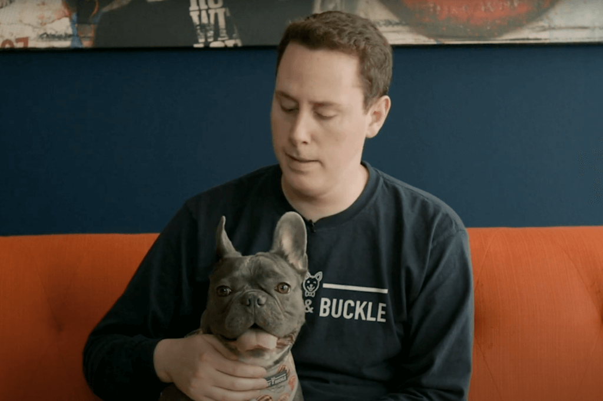
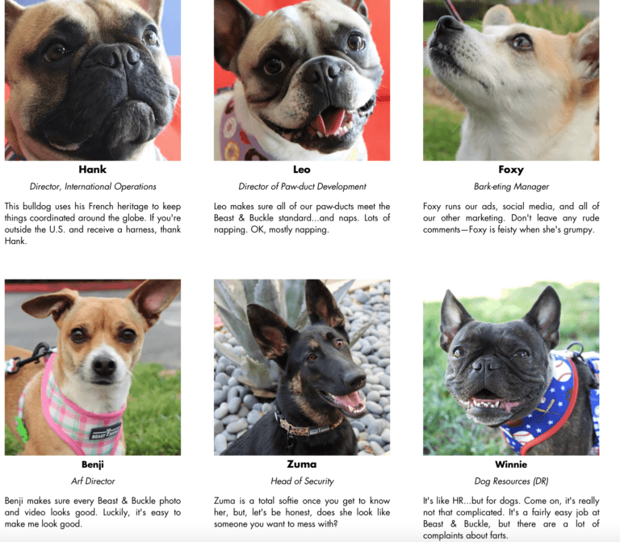
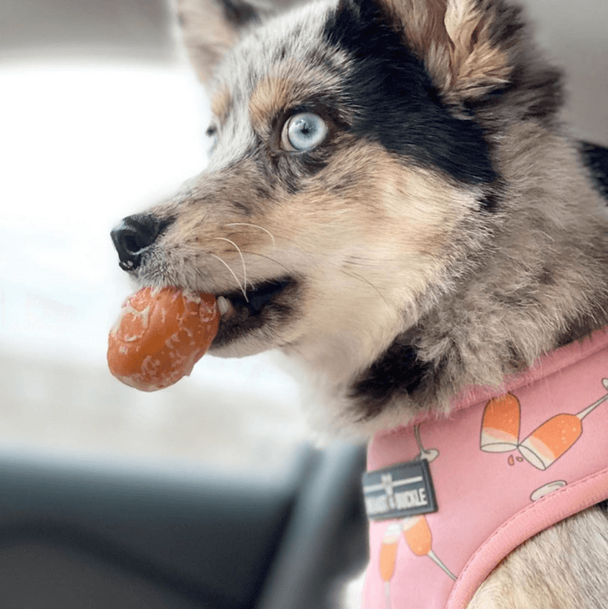
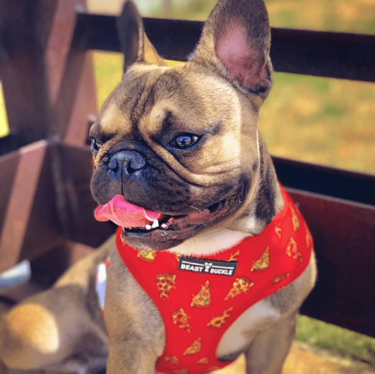
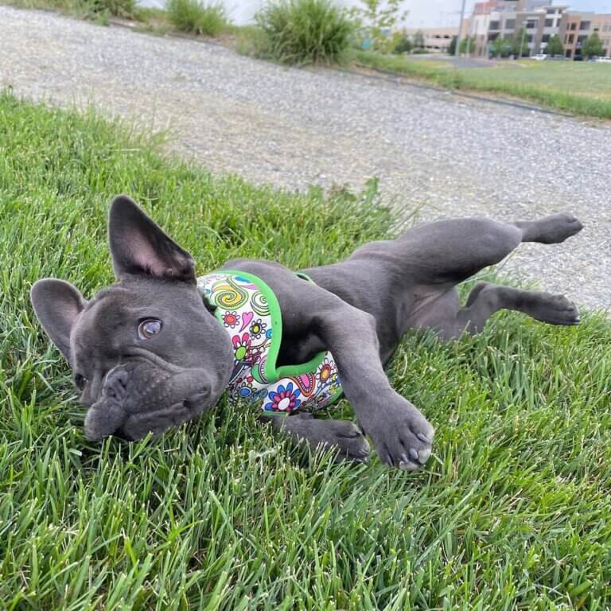
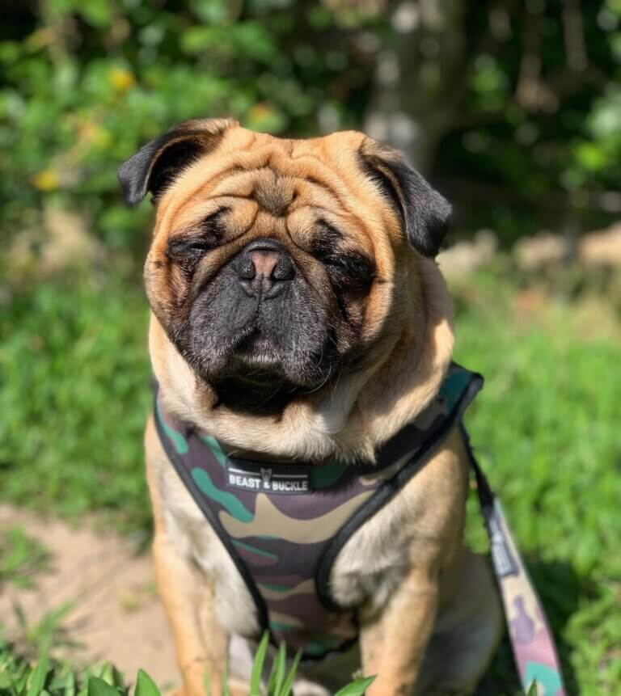
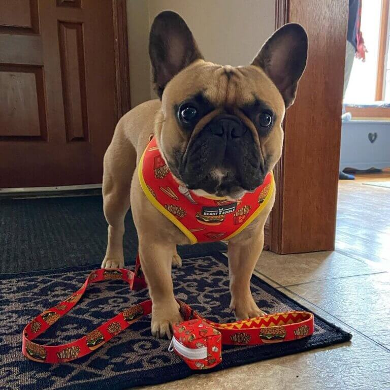

If you're a fan of Furry Paws, odds are you’re someone who believes in making an impact when you spend money. Well that, and you love your dog. Fortunately, things are trending in the direction of pet parents like you wanting their purchases to make a difference instead of just sending dollars to the top of a corporation.
That's why companies with missions like Beast & Buckle really resonate with dog lovers, especially those who feel like their dogs saved them. The company’s co-founder knows his dog saved him, and he knows he’s not alone in feeling this way.
"Who rescued who" has become a cliché at this point, but the sentiment remains ever true. People rescue dogs, but dogs save people in many ways as well. In my time writing for iHeartDogs, I’ve personally seen countless instances of lives transformed once a dog entered the picture. The numbers back it up too. In a 2016 survey of pet parents, 74% of pet parents reported mental health improvements, and 75% reported a friend’s or family member’s mental health improved from having an animal.
Dogs provide us with boundless love. They give us a reason to exercise when we’re too depressed to get out of bed. They encourage us to socialize. They’re our family members, best friends, and healers. It’s this exact sentiment that fueled the founding of Beast & Buckle.
Stew tragically lost his father when he succumbed to his battle with depression in 2016. The heartbreaking loss left Stew, also a veteran, in a dark place. His mother and sister recommended he get a dog. In a company video, Stew explained how following through on that suggestion saved him.
My sister sent me a picture of a little French Bulldog puppy that ended up changing my life.
That French Bulldog is named Clark, and he’s so important to Stew, he inspired him to leave his successful marketing career and dedicate his life to helping animals. Stew and Clark are Beast & Buckle’s co-founders. Beast & Buckle is a company that sells high-quality and gorgeous dog harnesses and other accessories. But to Stew, it’s much more than that. He explains:
I created Beast & Buckle products because I love my dog more than anything in the entire world. I wanted him to have something that was safe and comfortable and high-quality but I also really wanted something that would reflect his personality because he’s such a fun little guy and a plain harness with one color, that’s just not gonna cut it.
Shopping for your dog can make you feel good in more ways than one. When you buy a Beast & Buckle harness, something your dog can use daily, you’re also putting money towards a shared ideology. As Stew puts it:
There’s the love between me and Clark going through every single product that we make and if you’re a dog owner who feels that almost cosmic connection with their dog, then you’re going to be the perfect customer for Beast and Buckle.
The love of dogs is so integral to Beast & Buckle’s mission, they even "employ" several. Seven dogs serve on Beast & Buckle’s staff, including Clark: Foxy the Bark-eting Manager, Leo the Director of Paw-duct Development, Benji the Arf Director, German Shepherd Zuma as Head of Security, Winnie of Dog Resources, and Frenchie Hank as Director Of International Operations.
The company’s mission statement invites other people who know dogs are more than just “pets” to celebrate this idea with them.
While Stew and Clark know that they were put on this Earth to be together, they know that they aren’t alone in feeling this way—many dogs and their humans share a special bond that is absolutely one-of-a-kind. If you know what we’re referring to without even having to think about it, you and your human will make the perfect addition to our Beast & Buckle family.
Since launching in February 2019, Beast & Buckle has donated over $20,000 in harnesses and accessories. Every year, Beast & Buckle donates 5% of each purchase on Beastandbuckle.com to charities supporting animals, as well as making regular donations of harnesses, leashes and collars.
Among other organizations, Beast & Buckle supports:
Your dog needs to walk at least twice a day, so they might as well do it in style. Beast and Buckle harnesses feature unique, adorable designs. Dogs should be able to express their personalities through style too, right?
You can shop through rotating styles that suit your dog. Popular styles range from popsicles to stars and stripes to solar systems. These same cute designs are printed on dog bandanas, leashes, poop bag holders, and other walking accessories too!
Don’t these just make you happy? Beast & Buckle is about the excitement you feel when you buy something for your pup, because you care so much about them.
A harness isn’t all that helpful when your pup can wriggle right out of it (accidentally or on purpose.) Sizing properly is the first step on your journey to outfitting your dog in an adorable harness.
When trying to determine the correct size harness, consider the type of harness you are purchasing as well as the size of your dog’s chest and neck. Beast & Buckle sells 3 types:
The length in inches of your dog’s neck and chest affects their harness size. When measuring your dogs chest, be sure to start right behind their front legs. Using a measuring tape will make this task the easiest.
The "Classic" Harness runs a little smaller than the “Reversible” harness. For the Reversible dog harness, your dog’s weight factors in too. Beast & Buckle has sizing charts specific to their products on their website, which you should consult before purchasing.
But let me just assuage some concerns you may have. Beast & Buckle offers Instant Exchanges, which means they’ll send out a replacement harness right away before you even have to return the previous one. The whole process takes about 15 seconds. So if you test out the harness on your pup and it doesn’t fit properly, you can try again right away.
Looking through the products on Beast & Buckle’s site, all you see is rows of 5 star reviews. People and their pups adore these things.
Love this company! I can tell they really care about pups and their dog parents! The harness I purchased is so soft yet sturdy on my pup! I’ve been looking for a harness that she can’t wiggle out of, yet is not like wearing armour, and is soft for her to be in all day. This harness was exactly that!– Kim B.
My Frenchie loves all her harnesses! She has over 7 and each one gives her a unique style.– Ernesto R.
Naturally, they make great French Bulldog harnesses due to their inspiration. But they suit other breeds just as well!
By shopping Beast & Buckle, you combine your greatest loves: your dog and giving back to other dogs and dog people. It’s a pretty cute way to thank the pup for everything they’ve done for you.